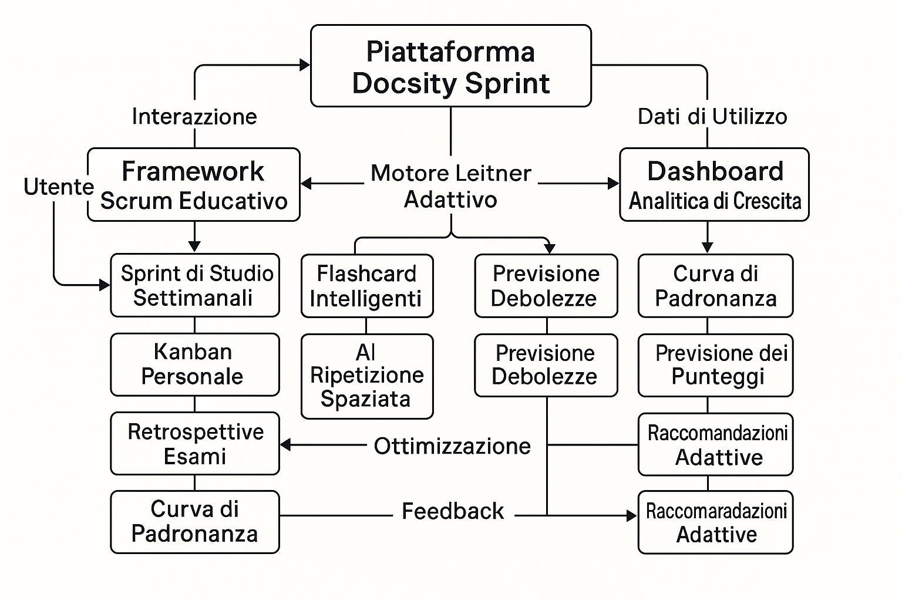
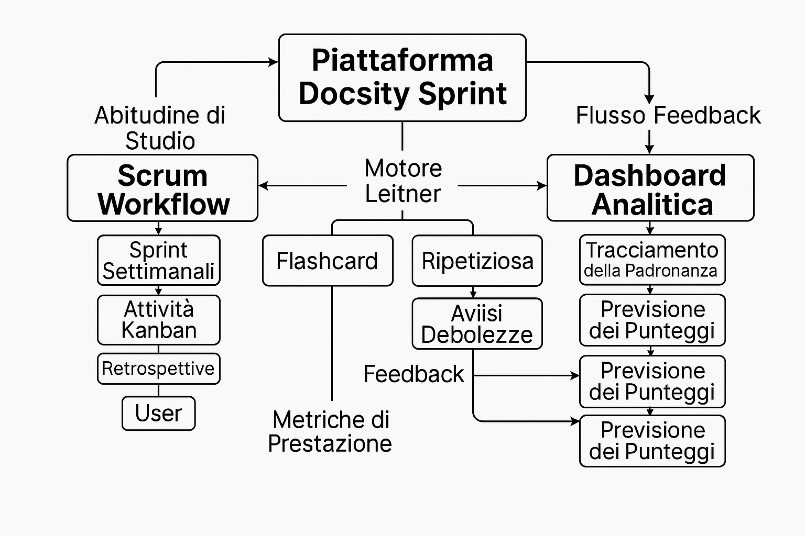
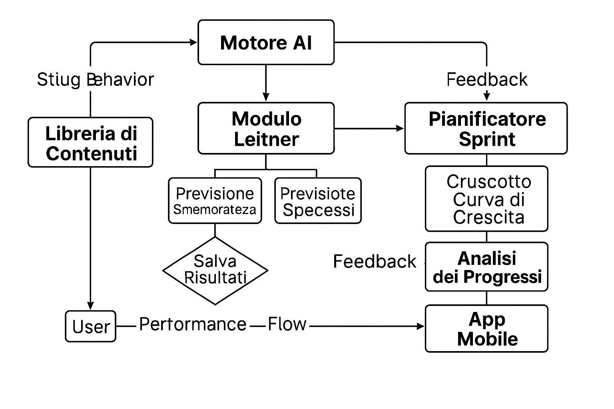

Gentile Team di Selezione di Docsity,
Scrivo per esprimere il mio interesse per la posizione di Responsabile Prodotto e Operazioni presso Docsity. Con oltre dodici anni di esperienza nella progettazione di sistemi finanziari, nell'esecuzione di strategie di trading algoritmico e nella gestione di progetti fintech, sono fiducioso nella mia capacità di contribuire efficacemente allo sviluppo del prodotto e al successo operativo della vostra azienda.
Il mio background include la guida dell'architettura di un Sistema di Supporto alle Decisioni basato su Python per il market-making in tempo reale, lo sviluppo di modelli basati su LSTM per la previsione delle tendenze dei prezzi e la gestione di team cross-funzionali su iniziative di trading basate sui dati. Questi progetti - in particolare GravityWaves, la mia piattaforma di previsione basata su AI - dimostrano la mia capacità di tradurre i dati di mercato in funzionalità di prodotto azionabili con precisione e visione strategica.
Da mio punto di vista, questo progetto incarna un ecosistema fluido e intelligente in cui il comportamento dell'utente, l'apprendimento adattivo e l'analisi delle prestazioni sono interconnessi in un ciclo continuo di miglioramento. L'architettura della piattaforma collega la pianificazione educativa con la ripetizione dilazionata, il feedback predittivo e il monitoraggio della crescita, permettendo all'apprendimento di evolversi in modo reattivo rispetto ai progressi dell'utente. Le abitudini di studio alimentano l'ottimizzazione personalizzata delle flashcard, i dati sulle prestazioni guidano le previsioni e le raccomandazioni, mentre i moduli di intelligenza artificiale reinseriscono le intuizioni nella pianificazione attraverso una dashboard intuitiva. Questa sintesi di progettazione dell'apprendimento, automazione e analisi centrata sull'utente riflette come Docsity possa trasformarsi da semplice contenitore di contenuti a compagno di apprendimento attivo.
Sebbene attualmente risieda in Iran, sto attivamente preparando il trasferimento in Italia, dove vive mia sorella a Torino. La sua presenza fornisce una base stabile e di supporto per l'integrazione culturale e logistica, garantendo una minima interruzione durante l'onboarding. Vedo questo trasferimento non come una sfida, ma come un'opportunità per portare una prospettiva globale, adattabilità e resilienza al vostro team.
Per fornire chiarezza riguardo alla mia posizione professionale, offro la seguente panoramica della mia candidatura:
| Punti di Forza | Debolezze |
|---|---|
| Ampia esperienza nel trading algoritmico e nella progettazione di prodotti | Mancanza di padronanza della lingua italiana (attualmente in fase di apprendimento) |
| Esecuzione comprovata di piattaforme di previsione basate su AI | Residenza fuori dall'Italia che richiede trasferimento |
| Competenza in Python, GitHub CLI, automazione CI/CD | Esperienza lavorativa limitata nei mercati europei |
| Opportunità | Minacce |
|---|---|
| Trasferimento di conoscenze specializzate da mercati emergenti | Processo di visto e potenziali ritardi nell'onboarding |
| Supporto familiare a Torino che facilita una transizione fluida | Limitazioni iniziali nel networking e integrazione locale |
| Contributo ai progetti AI e orientati ai dati di Docsity | Adattamento rapido richiesto in un ambiente di lavoro dinamico |
L'impegno di Docsity per un apprendimento significativo e un'innovazione basata sui dati si allinea fortemente con i miei valori professionali. Sono entusiasta di poter contribuire non solo con conoscenze tecniche, ma anche con leadership strategica e una prospettiva internazionale al vostro team. Grazie per aver considerato la mia candidatura.
  Cordiali saluti,
Shakour Alishahi
Email: shakouralishahi@gmail.com
Telefono: +98 912 446 7903
GitHub: Shakour-Data